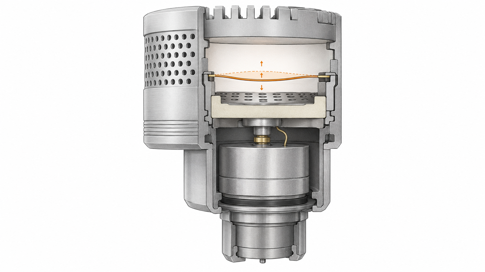
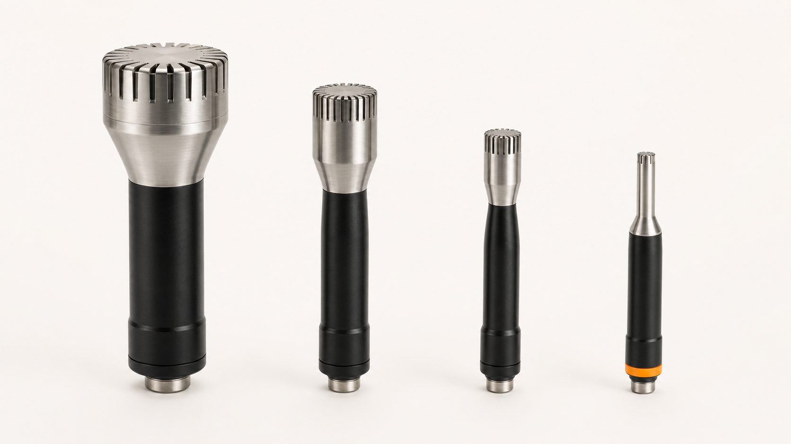
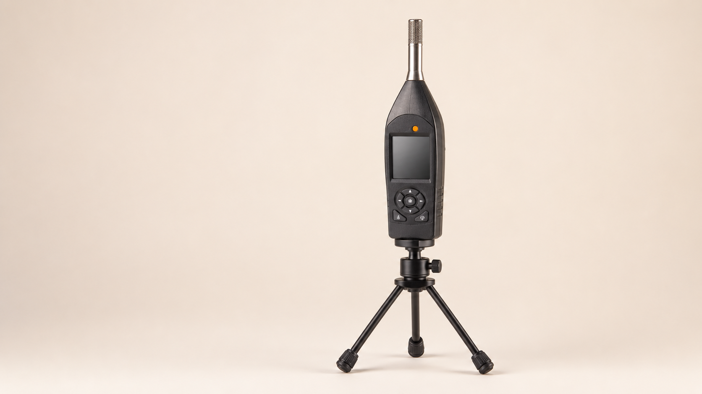
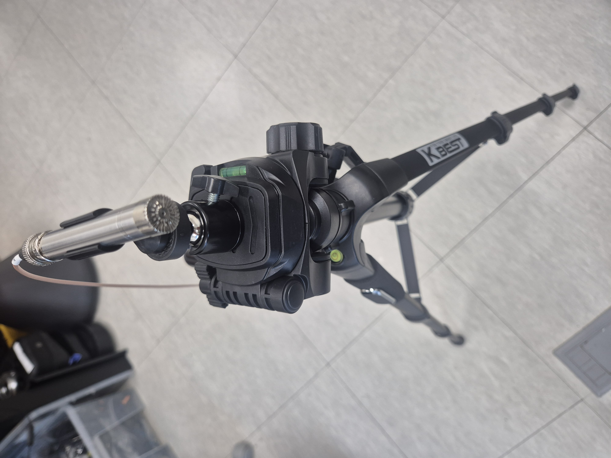
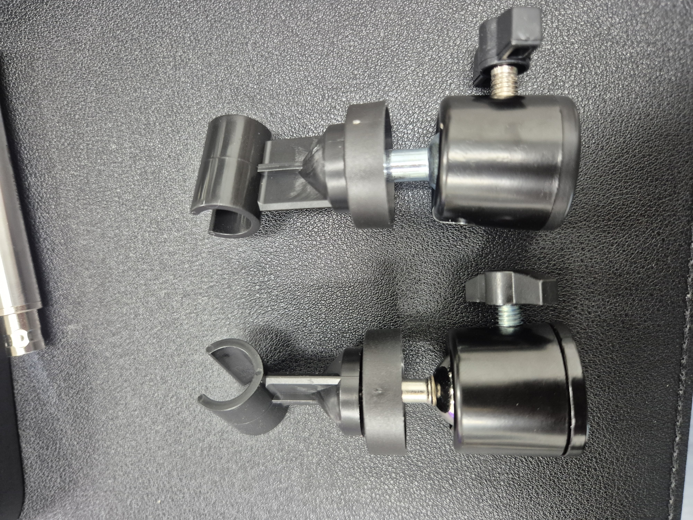
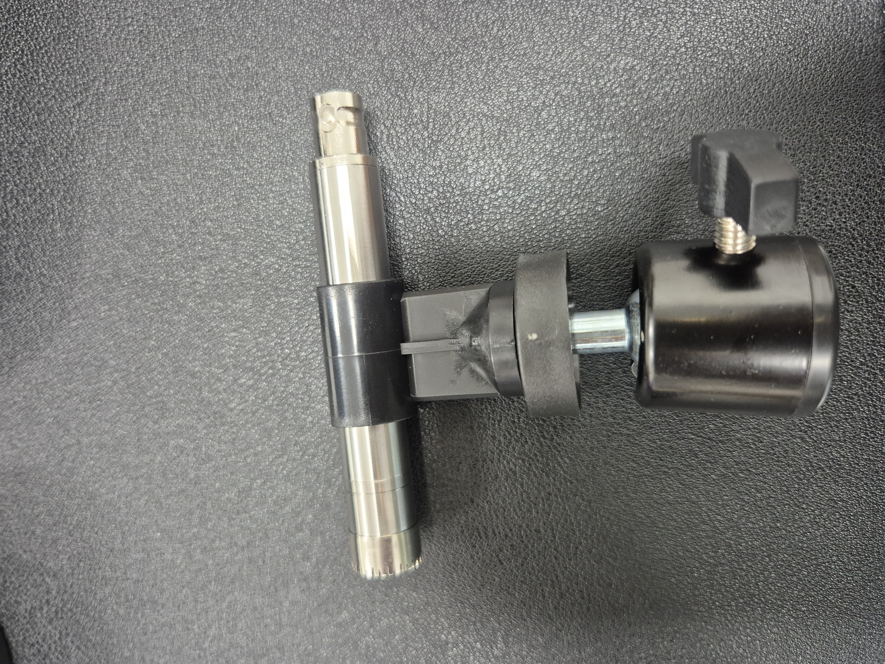
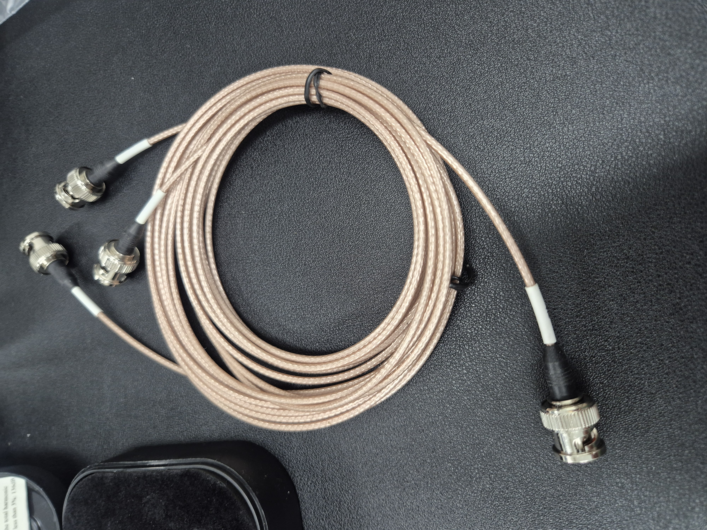
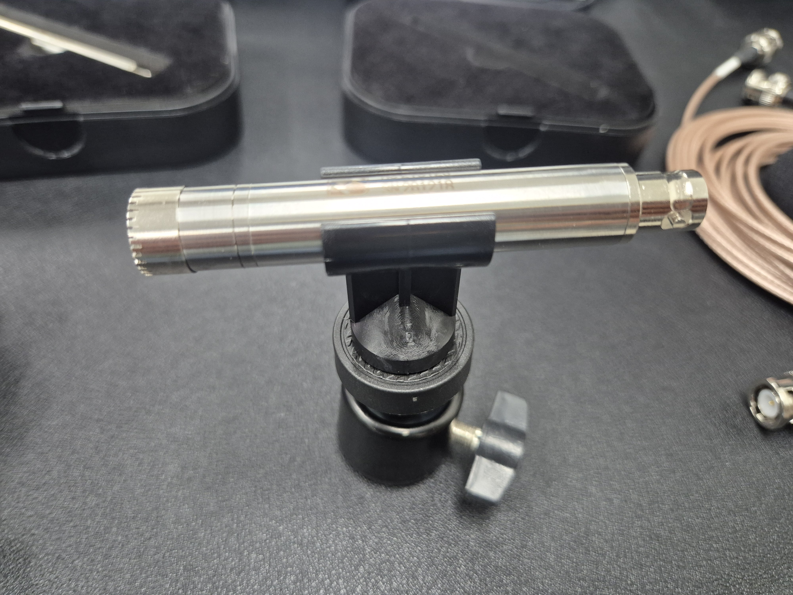
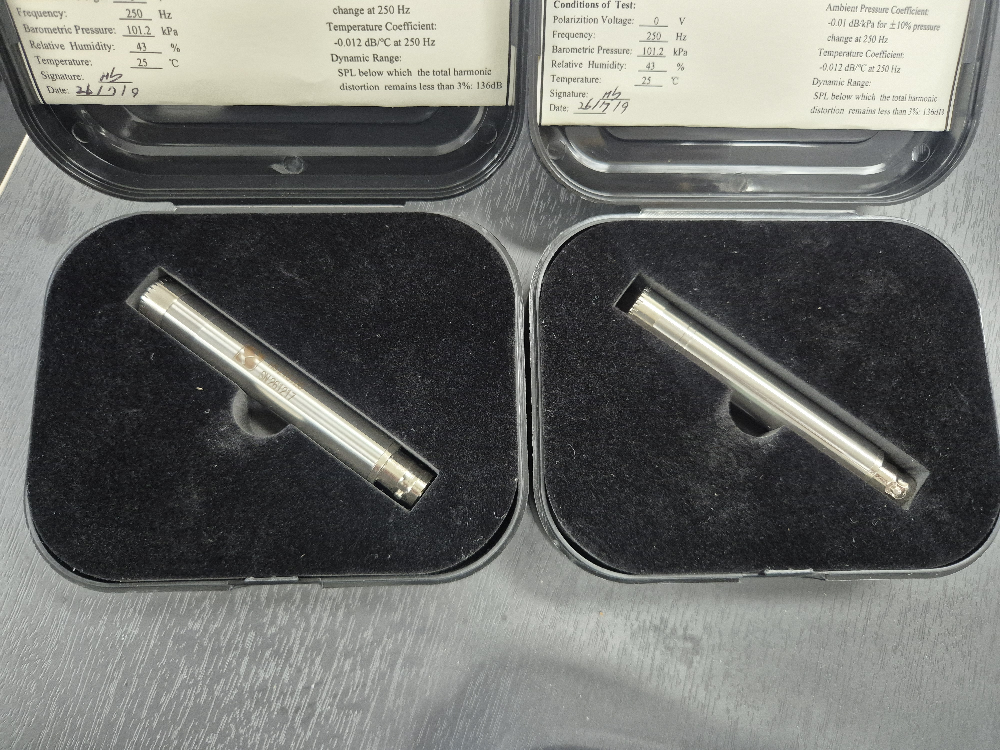
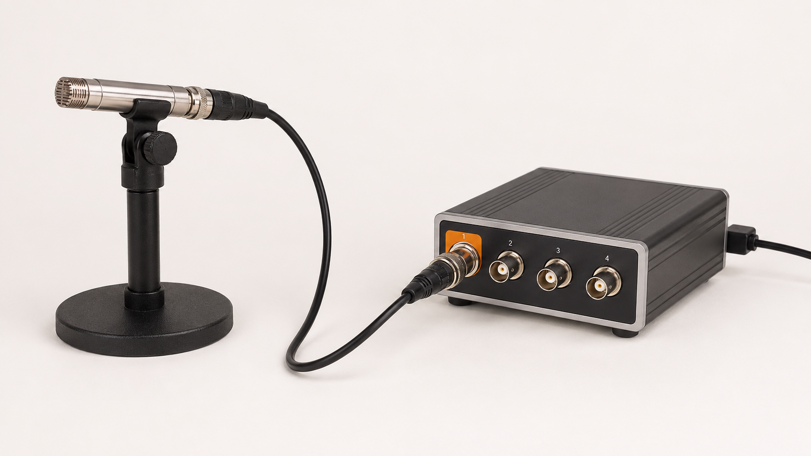

마이크로폰·소음계
원리·종류·선정 가이드
콘덴서형 마이크로폰이 소리를 전기 신호로 변환하는 원리부터, 지향성·크기·출력방식에 따른 마이크로폰 종류, Class 1·2 소음계 구분, 용도에 맞는 선정 기준과 현장 측정 방법·유의사항, DT9837 등 DAQ와의 연동까지 씨앤디테크가 정리합니다.
콘덴서 구조로 음압 감지
BNC 케이블로 DAQ 바로 연결
소음계 정확도 등급
콘덴서 마이크로폰 — 원리와 구조
소음·진동 측정에 쓰이는 정밀 마이크로폰은 대부분 콘덴서(정전용량형, Condenser) 방식입니다. 얇은 금속 다이어프램과 그 아래 고정된 백플레이트가 하나의 커패시터를 형성하고, 소리에 의해 다이어프램이 미세하게 진동하면 두 판 사이의 간극이 변하면서 정전용량이 변화합니다. 이 정전용량 변화가 음압에 비례하는 전기 신호로 출력됩니다.
음압에 반응해 미세하게 움직이는 얇은 금속(또는 금속 코팅) 막. 두께·장력이 감도와 주파수 응답을 결정합니다.
다이어프램과 일정 간극을 두고 고정된 전극. 다이어프램과 함께 커패시터를 구성합니다.
커패시터의 매우 높은 출력 임피던스를 낮은 임피던스로 변환해, 긴 케이블로도 노이즈 없이 신호를 전송할 수 있게 합니다.

마이크로폰 종류 — 지향성·크기·출력방식
측정용 마이크로폰은 세 가지 기준으로 구분해 선택합니다.
① 음장 보정 방식(지향성)
음원을 정면(0° 입사각)으로 향하도록 배치했을 때 평탄한 주파수 응답. 반사가 거의 없는 야외·무향실에서 단일 음원 측정에 적합.
사방에서 반사된 소리가 뒤섞인 잔향 공간에서 평탄한 응답. 일반 실내·작업환경 소음 측정에 널리 사용.
마이크로폰 표면에서의 음압 자체를 측정. 벽면·구조물 표면에 밀착 설치하는 특수 계측에 사용.
② 캡슐 직경
| 직경 | 고주파 응답 | 감도 | 다이나믹 레인지 | 주요 용도 |
|---|---|---|---|---|
| 1인치 | 낮음 | 매우 높음 | 저음압 특화 | 저소음 정밀 계측 |
| 1/2인치 | 중간 | 높음 | 넓음 | 범용 정밀 측정(가장 보편적) |
| 1/4인치 | 높음 | 중간 | 고음압까지 | 고주파·고음압 측정 |
| 1/8인치 | 매우 높음 | 낮음 | 매우 높은 음압까지 | 초고주파·충격음 특수 계측 |
캡슐이 작을수록 고주파 응답과 다이나믹 레인지 상한이 좋아지지만 감도(mV/Pa)는 낮아지는 트레이드오프가 있습니다.

③ 출력 방식
약 200V 분극 전압과 전용 전하 증폭기가 필요. 셋업이 복잡하지만 국가 표준급 정밀 계측에 사용됩니다.
정전류로 구동되는 내장 프리앰프. 표준 BNC 케이블 하나로 DT9837 등 IEPE 입력 DAQ에 직결할 수 있어 현장 측정에 실용적입니다.
소음계(Sound Level Meter) 종류
마이크로폰이 소리를 전기 신호로 바꾸면, 소음계(또는 DAQ+소프트웨어)가 이를 사람이 판단할 수 있는 소음 지표로 변환·표시합니다.

| 구분 | Class 1 (정밀급) | Class 2 (일반급) |
|---|---|---|
| 기준 표준 | IEC 61672-1 | IEC 61672-1 |
| 허용 오차 | 좁음(고정밀) | 다소 넓음 |
| 주요 용도 | 법정 소음 측정·환경영향평가·정밀 연구 | 현장 간이 점검·작업환경 확인 |
| 가격·휴대성 | 상대적으로 고가 | 저렴·휴대성 우수 |
기능별 분류
Leq(등가소음레벨)·Lmax·Lmin·Lpeak·통계레벨(Ln)을 시간에 따라 적분·통계 처리. 환경·생활 소음 측정의 표준 방식.
1/1·1/3 옥타브밴드 또는 FFT로 주파수별 소음 성분을 분해. 소음원 식별·저감 대책 수립에 활용.
작업자가 착용해 하루 누적 소음 노출량을 기록. 산업안전보건 소음 노출 관리에 사용.
마이크로폰·소음계 선정 시 유의사항
측정 목적과 현장 조건에 맞지 않는 장비를 선택하면 데이터 자체를 신뢰할 수 없게 됩니다. 아래 기준을 먼저 확인합니다.
- 1측정 목적에 맞는 지향성 — 단일 음원을 실외·무향 환경에서 측정한다면 자유음장형, 반사가 많은 실내·일반 환경이라면 확산음장형을 선택합니다.
- 2Class 1/2 등급 확인 — 법정 소음 측정, 환경영향평가 등 공인 데이터가 필요한 경우 Class 1 장비가 요구되는지 관련 규정을 먼저 확인합니다.
- 3측정 주파수·다이나믹 레인지 — 초저주파·초음파 영역이나 매우 높은 음압(충격음)을 측정해야 한다면 캡슐 크기와 사양을 그에 맞게 선택합니다.
- 4DAQ와의 신호 호환성 — 기존에 IEPE 기반 DAQ(DT9837 등)를 사용 중이라면 프리폴라라이즈드(IEPE) 마이크로폰을 선택해야 별도 컨디셔너 없이 바로 연동됩니다.
- 5방풍·방수 액세서리 필요성 — 실외 측정이라면 윈드스크린(방풍망), 강우·습기가 우려되면 방수 커버 등 현장 조건에 맞는 액세서리를 함께 준비합니다.
- 6캘리브레이션 이력 관리 — 마이크로폰은 개체마다 감도(Sensitivity)가 미세하게 다르므로, 개별 캘리브레이션 인증서를 확보하고 정기적으로 재교정 주기를 관리해야 합니다.
현장 측정 방법
동일한 마이크로폰이라도 배치·절차가 잘못되면 측정값의 신뢰도가 크게 떨어집니다.
- 1배치 방향 — 자유음장형은 음원 정면(0°)을 향해, 확산음장형은 통상 음원을 향해 그대로 배치하거나 제조사 권장 입사각을 따릅니다.
- 2측정 거리·높이 — 소음원으로부터의 거리, 지면·바닥으로부터의 높이는 관련 규격(예: 환경 소음 측정 기준 1~1.2m 이상)에 맞춰 설정하고 매 측정마다 동일하게 유지합니다.
- 3배경소음 보정 — 대상 소음원을 켠 상태와 끈 상태를 각각 측정해 차이가 10dB 이상이면 보정 불필요, 3~10dB면 로그 감산으로 보정, 3dB 미만이면 측정 위치를 재검토합니다.
- 4가중치 설정 — 목적에 맞는 주파수 가중(A/C/Z)과 시간 가중(Fast/Slow/Impulse)을 측정 전에 설정하고, 결과 보고 시 함께 명시합니다.
- 5현장 캘리브레이션 — 측정 시작 전·후에 피스톤폰 등 기준 음압 발생기로 마이크로폰 감도를 현장에서 재확인합니다.
측정 시 유의사항
- 1풍절음(바람 노이즈) — 실외에서 바람이 조금이라도 있으면 캡슐에 부딪히는 풍절음이 실제 소음보다 큰 오차를 유발합니다. 윈드스크린(방풍망) 착용이 거의 필수입니다.
- 2반사면 회피 — 측정자의 몸, 벽면, 바닥 등 근접한 반사면은 측정값을 왜곡시킵니다. 마이크로폰과 반사면 사이에 충분한 거리를 둡니다.
- 3온도·습도 영향 — 고온다습 환경은 프리앰프 특성과 다이어프램 장력에 영향을 줄 수 있어, 극한 환경 측정 시 제조사 사양의 사용 범위를 확인합니다.
- 4케이블·커넥터 상태 — BNC 커넥터 접촉 불량이나 케이블 노화는 노이즈 유입·신호 끊김의 원인이 됩니다. 연장 케이블이 길어질수록 전기적 노이즈에 더 취약해집니다.
- 5거치 방식 — 손으로 들고 측정하면 신체 반사와 흔들림이 섞입니다. 붐 스탠드·삼각대에 거치해 수평(레벨)을 맞추고 고정된 상태로 측정하는 것이 원칙입니다.
- 6개체별 감도값 반영 — 마이크로폰마다 개별 캘리브레이션 인증서의 감도(mV/Pa) 값이 다르므로, 측정 소프트웨어에 해당 개체의 실제 감도값을 정확히 입력해야 합니다.
실측 시스템 구성 사진
씨앤디테크가 협력업체를 통해 공급한 정밀 측정용 마이크로폰의 실제 현장 구성 사례입니다.




마이크로폰 스위블 클립 마운트 · 프리앰프 장착 모습 · 다채널 연결용 BNC 연장 케이블


DT9837 DAQ 연동
DT9837은 4채널 IEPE(ICP®) 입력을 지원하는 소형 USB 진동·소음 데이터수집장치로, USB 케이블 하나로 PC 연결과 전원 공급이 동시에 이루어져 별도 전원 장치가 필요 없습니다.

- 1직결 조건 — 프리폴라라이즈드(IEPE) 방식 마이크로폰이라면 BNC 케이블로 DT9837의 IEPE 입력에 바로 연결해 측정할 수 있습니다. 외부 폴라라이즈드(비IEPE) 타입은 별도의 전하 증폭기·신호 컨디셔너를 거쳐야 합니다.
- 2dB SPL 환산 — QuickDAQ 소프트웨어에 마이크로폰의 실제 감도값(mV/Pa)을 입력하면 전압 신호를 dB SPL 단위로 직접 환산해 표시합니다.
- 3가중·분석 옵션 — A/C 주파수 가중치 적용, 1/1·1/3 옥타브밴드 분석, FFT 분석(옵션)까지 QuickDAQ 내에서 처리할 수 있습니다.
- 4다채널 동시 측정 — 4개 채널을 활용해 여러 지점의 소음을 동시에 측정하거나, 마이크로폰과 가속도센서를 함께 연결해 소음·진동을 동시에 계측할 수도 있습니다. 더 많은 채널이 필요하면 8·16채널 구성에서 최대 64채널까지 확장되는 DT9857E를 검토합니다.
관련 기술자료 더 보기:
자주 묻는 질문
마이크로폰·소음계 선정과 측정 관련 자주 접수되는 질문입니다.
콘덴서 마이크로폰과 다이나믹 마이크로폰은 어떻게 다른가요?
콘덴서(정전용량형) 마이크로폰은 다이어프램과 백플레이트가 커패시터를 형성하며, 음압에 의한 정전용량 변화로 신호를 만듭니다. 감도가 높고 주파수 응답이 평탄해 정밀 측정용으로 사용됩니다. 다이나믹 마이크로폰은 코일-마그넷의 전자기 유도 방식으로 구조가 튼튼하지만 정밀 계측에는 거의 사용하지 않습니다. 소음·진동 측정용 마이크로폰은 대부분 콘덴서형입니다.
프리폴라라이즈드(IEPE)와 외부 폴라라이즈드 마이크로폰 중 어떤 것을 선택해야 하나요?
외부 폴라라이즈드는 약 200V 분극 전압과 전용 전하 증폭기가 필요해 실험실 정밀 계측에 주로 쓰입니다. 프리폴라라이즈드(IEPE/ICP®)는 별도 전압 공급 없이 표준 BNC 케이블로 DAQ에 직결할 수 있어 현장·휴대용 측정에 실용적입니다. 국가 표준급 정밀 캘리브레이션이 필요하다면 외부 폴라라이즈드 타입을 검토합니다.
소음계 Class 1과 Class 2는 어떻게 다른가요?
IEC 61672-1 기준 Class 1(정밀급)은 허용 오차가 작아 법정 소음 측정·환경영향평가·정밀 연구에 사용됩니다. Class 2(일반급)는 오차가 다소 크지만 저렴하고 휴대성이 좋아 현장 간이 점검에 적합합니다. 국내 법정 소음 측정은 대부분 Class 1을 요구하므로 용도를 먼저 확인해야 합니다.
자유음장형과 확산음장형 마이크로폰은 어떻게 다른가요?
자유음장형은 음원 정면(0°) 배치 시 평탄한 응답을 갖도록 보정되어 반사가 없는 야외·무향실의 단일 음원 측정에 적합합니다. 확산음장형은 반사가 뒤섞인 잔향 공간에서 평탄한 응답을 갖도록 보정되어 일반 실내 소음 측정에 적합합니다. 압력형은 벽면·구조물 표면 밀착 설치용 특수 방식입니다.
배경소음이 있는 현장에서는 측정값을 어떻게 보정하나요?
소음원을 끈 상태와 켠 상태를 각각 측정해 차이를 비교합니다. 차이가 10dB 이상이면 보정이 필요 없고, 3~10dB면 로그 감산으로 순수 소음원 레벨을 계산합니다. 3dB 미만이면 신뢰할 수 있는 보정이 불가능하므로 측정 위치를 소음원에 가깝게 하거나 배경소음 자체를 낮추어야 합니다.
DT9837로 마이크로폰 측정이 가능한가요?
네, IEPE(ICP®) 방식의 프리폴라라이즈드 마이크로폰이라면 DT9837의 4채널 IEPE 입력에 BNC 케이블로 직접 연결해 측정할 수 있습니다. QuickDAQ에서 마이크로폰 감도값(mV/Pa)을 입력하면 dB SPL로 직접 환산 표시되며, A/C 가중 및 옥타브밴드 분석도 지원합니다. 외부 폴라라이즈드(비IEPE) 타입은 별도 컨디셔너가 필요합니다.
마이크로폰·소음계 측정 시스템 구성, 지금 문의하세요
측정 목적, 현장 조건(실내/실외), 필요 정확도 등급(Class 1/2), DAQ 연동 여부를 알려주시면 협력업체를 통해 최적의 마이크로폰·소음계와 DT9837 등 DAQ 연동 구성을 제안드립니다.